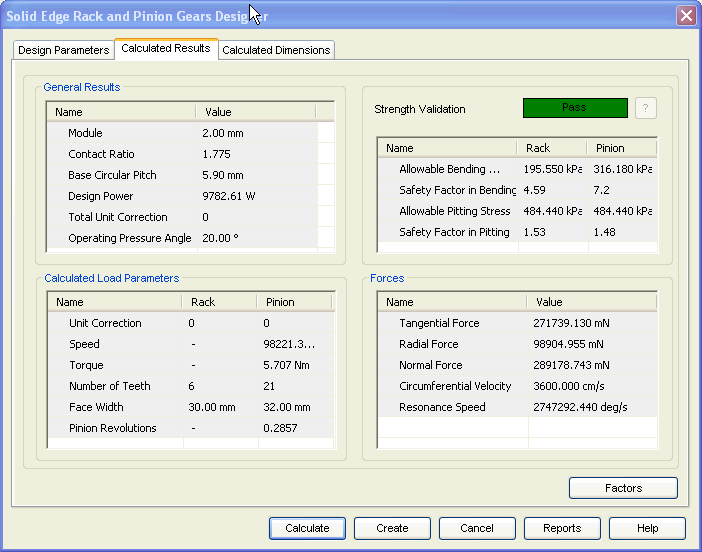

Rack and Pinion Calculated Results tab
The Calculated Results tab provides the options you use to view results of calculation.

General Results
Displays calculated gearing parameters for the pair.
Calculated Load Parameters
Displays the values specific to Rack or Pinion.
Strength Validation
Displays the overall performance of the gear in terms of Pass/Fail. You can also review the allowable stresses of the gear displayed in this area.
Forces
Displays the results related to load carrying capacity of the designed gears.
Learn more
Rack and Pinion Gears moduleUsing the Rack and Pinion module
Rack and Pinion Design Parameters tab
Rack and Pinion Calculated Dimensions tab
Rack and Pinion Material selection
How to (Rack and Pinion)
Standards Used for Rack and Pinion Gear calculations